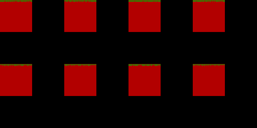
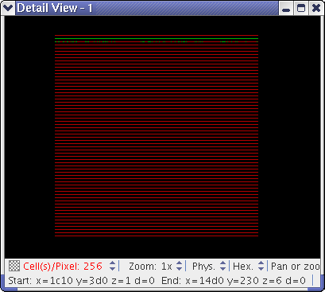

Available information
To enable you to quickly analyze bit fail maps, the BFM Viewer displays information on individual cells as well as statistical information.
Graphical information on individual cells or cell clusters
The BFM Viewer displays the loaded bit fail maps in a combined graphical display where the color of each pixel indicates a specific combination of failures in the loaded bit fail maps.
For example, one color might indicate cells that have failed in the first and third bit fail map layers, another might indicate failures in the second and third layers, and still another failures in the first layer only.
These displays are available in the Chip Overview tab and in additional display views, which you can create and which are displayed in their own windows, as described in Creating and managing detail views.
These figures show the entire bit fail maps from the chip overview and a detail view of the same maps, respectively.


Which colors indicate which fail combinations is explained in the Fail Combinations tab. Assigning different colors is described in Changing the color scheme.
Numerical information on individual cells or cell clusters
For failed cells, the BFM Viewer displays the logical, physical, or topological x, y, and Z coordinates as well as the data values (d) in the Failed Cells list in the Chip Overview tab. (For topological addresses, only the x and y coordinates are displayed.) You can add remarks to each listed failed cell.
Similar information is available for marked cells. Marking cells is described in Marking and unmarking cells.
Statistical information
The BFM Viewer displays the numbers of failed cells for several objects and regions:
- Total failed cells in unloaded and loaded bit fail maps: in the Bit Fail Maps tab's Available BFMs list.
- Total failed cells in loaded bit fail maps: in the Bit Fail Maps tab's BFM States list.
- Numbers of cells that have failures in a specific combination of layers: in the Fail Combinations tab.
This tab displays several different fail combination counts:
- Number of cells with fails in the same layers: in the Unfiltered Incl. and Filtered Incl. columns.
- Number of cells with fails and passes in the same layers: in the Unfiltered Excl. and
Filtered Excl. columns.
The numbers in the two "Filtered" columns indicate how many cells have the specified fails, or fails and passes, and also match the current filter rules in the Filters tab.
If an analysis area is defined and the Analyze All option in the Analysis Area window is unchecked, the numbers in the four columns in the Fail Combinations tab show only the counts of the various types of failed cells in the analysis area.
If no analysis area is defined or if Analyze All is checked, the numbers reflect the entire DUT.
Functional changes
- Introduced before SmarTest 6.3.2